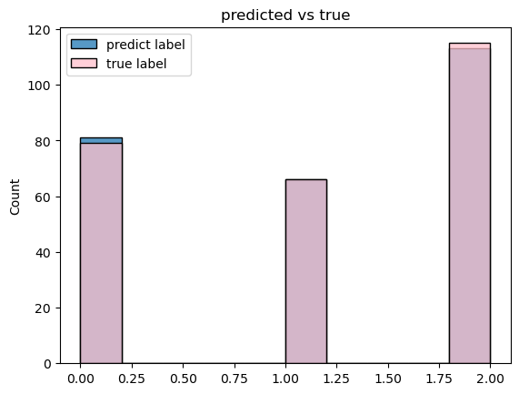
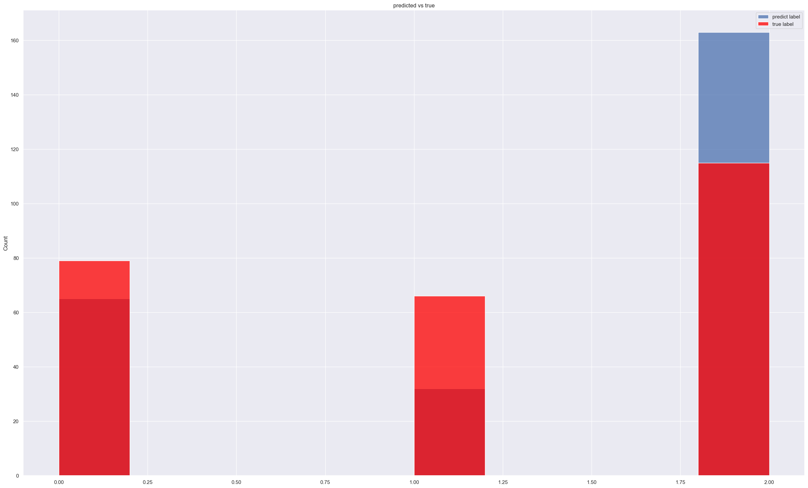
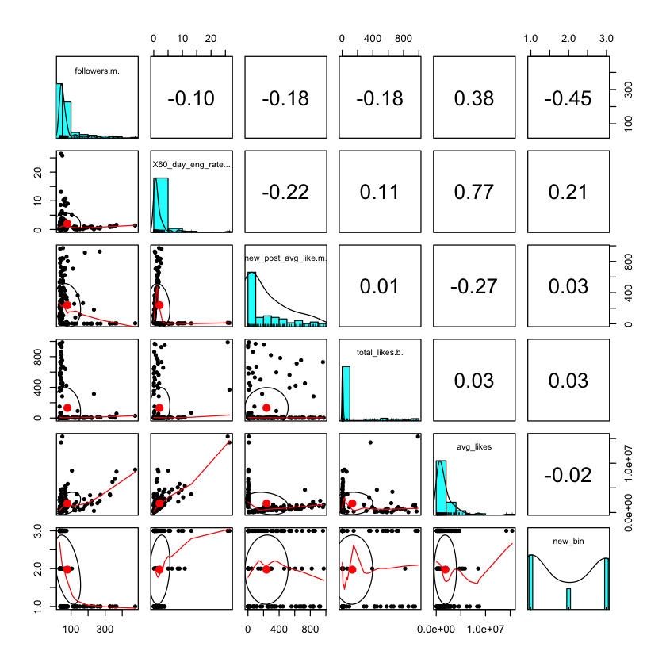
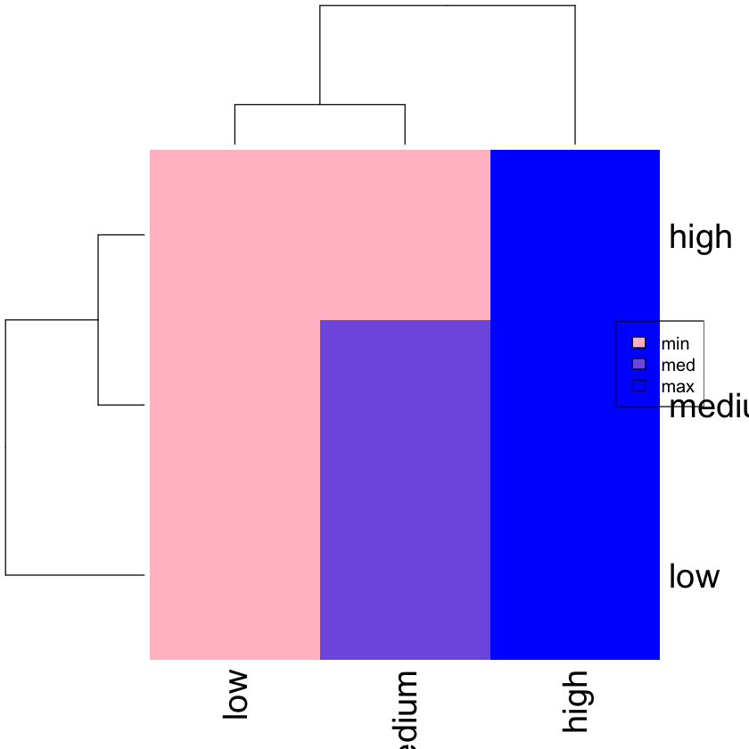

Naive Bayes,the original meaning of Naive here is naive, often with a little derogatory taste, and it is used in the name of this algorithm to translate it into simplicity, which can also be called a kind of tolerance. Another keyword, Bayesian, is because the main theoretical basis of the Naive Bayesian algorithm is the Bayesian theorem, so this article first introduces the Bayesian theorem, and then leads to the basic ideas and principles of the Naive Bayesian algorithm
Bayes theorem is generally used to solve the posterior probability, the core formula is:
P(A|B) is called the posterior probability, which is the target to be sought P(A) is the prior probability, which is generally obtained from a large amount of data statistics, and can also be provided based on experience when the amount of data is small P(B|A) is the conditional probability, which can be obtained according to a large amount of data statistics. It is generally given by the method of maximum likelihood estimation, and it actually belongs to the prior probability In fact, P(B) also belongs to the prior probability, and only involves a single variable, so it is similar to P(A), and can also be obtained from statistics, but because P(B) is independently in the denominator in Bayesian theorem In , the size of its specific value will not affect the determination result of the maximum posterior probability, and generally no calculation is required.
Naïve Bayes (NB) in Python with Labeled Text Data
In this section, I used Naive Bayes to predict sentiment analysis for test data Naive Bayes is a classification method based on Bayes’ Theorem and the assumption of predictor independence. It performs well in the case of categorical input variables compared to the numerical variables. I want to predict result which are negative, neutral, positive by using naive bayes.
First, split the dataset into train and test
Second, train Multinomial Naive Bayes model to predict text in x_test and calculate the accuracy
Finally, Make several visualizations and gather a conclusion.
Load required packages
Code
import pandas as pdimport numpy as npfrom sklearn.model_selection import train_test_splitfrom sklearn.feature_extraction.text import CountVectorizerfrom sklearn.feature_extraction.text import TfidfVectorizerfrom sklearn.naive_bayes import MultinomialNBfrom sklearn.pipeline import make_pipelinefrom sklearn.metrics import confusion_matrix, accuracy_scorefrom sklearn.preprocessing import LabelEncoderimport seaborn as snsimport matplotlib.pyplot as plt
Since when we use Naive Bayes, we need to tranfer y(label data) into numeric column. As a result, LabelEncoder can greatly help us to tranform Y_train, Y_test value into 0,1,2 in order to simpler utilize Naive Bayes to calculate the result.
Code
Encoder = LabelEncoder()Y_train = Encoder.fit_transform(y_train) #Transform Y_train, Y_test value into 0,1,2Y_test= Encoder.fit_transform(y_test)
Code
x_train.head()
557 Consumer privacy predictions—how marketers wil...
200 A more memorable connection is one that respec...
302 RT @OkeyMor57: @jay_scherrer @muskQu0tes @elon...
944 @elonmusk \n“But if Apple forsakes consumer pr...
594 FCC Acts To Protect Consumer Privacy From Unwa...
Name: text, dtype: object
Code
x_test.head()
973 Consumer privacy predictions—how marketers wil...
1246 Decentralized Identity: A New Era of Consumer ...
306 U.S. State Consumer Privacy Laws – a short 5-m...
531 RT @GRAUSAFL: Consumer Privacy in Retail from ...
345 Have you ever heard of self-sovereign distribu...
Name: text, dtype: object
Naive Bayes Classification
There are three types of Bayesian classifiers, namely Multinomial Naive Bayes, Binarized Multinomial Naive Bayes, and Bernoulli Naive Bayes. This article describes the first Bayesian classifier, which is mainly used for text topic classification. In Multinomial Naive Bayes, the number of times a word appears, that is, term frequency (term frequency); and the second type—Binarized Multinomial Naive Bayes—does not consider word frequency, but only considers whether the word appears, and is mainly used for text sentiment analysis. For example, if a piece of text mentions the word bad, using the second classifier will not consider how many times bad appears, it only pays attention to whether bad appears.
For text classification, it is more suitable to use multinomial Naive Bayes Model. I built a model to fit x_train and Y_train, then make a prediction for x_test to determine whether Naive Bayes is a suitable model for sentiment analysis of prediction.
newdf = pd.DataFrame(y_pred)sns.histplot(y_pred)sns.histplot(Y_test,color='pink')plt.legend(labels=["predict label","true label"])plt.title("predicted vs true")
Text(0.5, 1.0, 'predicted vs true')

From this plot, we can see the true labels are nearly as similar as predicted label. There is a few misclassification here. In the neutral column and positive column which are 1 and 2, there are a few misclassifications. But we can conclude that naive bayes is a good model here. We can enlarge train data in order to avoid some misclassifications.
In the heatmap shows above, it clearly shows the attitude distribution which are negative, neutral, positive between true labels and predicted labels. As we can see, the misclassification is low.
Further prediction for using Naive Bayes to predict scores of each text
From previous dataset, it not only defined attitude of each text, it also defined scores for each text. I would like to figure our whether a Naive Bayes Model is suitable for predict scores of each text.
First, calculate the frequencies of each scores and trying to bin them into different range
Second, split the dataset into train and test
Third, train Multinomial Naive Bayes model to predict text in x_test and calculate the accuracy
Finally Make several visualizations and gather a conclusion.
Now we define the labels and We can use the cut() function to convert the numeric values of the scores into the categorical values. We need to specify the bins and the labels. In addition, we set the parameter include_lowest to True in order to include also the minimum value.
The accuracy is low here, so we can predict that the Naive Bayes is not suitable for predict scores in each text.
Code
newdf = pd.DataFrame(y_pred)sns.histplot(y_pred)sns.histplot(Y_test,color='red')plt.legend(labels=["predict label","true label"])plt.title("predicted vs true")
Text(0.5, 1.0, 'predicted vs true')

As the plot shows, there are a lot of misclassification during the Naive baye prediction.
Conclusion
Naive Bayes in here is a great model to predict sentiment attitude. As we can see, the accuracy score is about 99. It means we only have about 2.5% misclassification. This can leads us to conclude that the attitude variable is independent. The Naive Bayes classifier is much faster with its probability calculations. This is the kind of algorithm used when all features follow a normal distribution. All features are continuous valued. The assumption is that there is no covariance between the independent features. We can further this model to analysis bigger dataset’s sentiment. In the following research, I will utilize more twitter api to gather the customers’ attitudes about consumer privacy, at this time, the naive bayes can be a useful tool to predict that.
However, for the further prefiction of each text’s score, the Naive Bayes is not a good model for prediction. I will try different model to predict that.
Naive Bayes in R
In this section, I used Naive Bayes to identify the relationship between influence scores and different factors of being a instagram influencer. Naive Bayes is a classification method based on Bayes’ Theorem and the assumption of predictor independence. It performs well in the case of categorical input variables compared to the numerical variables.
Because there are so many scores in this datasets, It is more workable to take them into different bins like 0-75, 70-100 to identify the influence scores are high or low
Code
data <- data %>% mutate(new_bin = cut(influence_score, breaks=c(0,77,84,100)))#cut influence scores into different binsdata$new_bin <-as.character(data$new_bin)data$new_bin[data$new_bin=="(0,77]"]<-"low"data$new_bin[data$new_bin=="(77,84]"]<-"medium"data$new_bin[data$new_bin=="(84,100]"]<-"high"# Catergorized scores between 0-60 as low scores, 60-85 as medium scores,85-100 as high scoresdata$new_bin <-as.factor(data$new_bin) # Factorize the column new_bin for futher classificationhead(data)
A data.frame: 6 × 12
X
rank
channel_info
influence_score
posts.k.
followers.m.
X60_day_eng_rate...
new_post_avg_like.m.
total_likes.b.
country
avg_likes
new_bin
<int>
<int>
<chr>
<int>
<dbl>
<dbl>
<dbl>
<dbl>
<dbl>
<chr>
<dbl>
<fct>
1
1
1
cristiano
92
3.30
475.8
1.39
6.5
29.0
Spain
8700000
high
2
2
2
kyliejenner
91
6.90
366.2
1.62
5.9
57.4
United States
8300000
high
3
3
3
leomessi
90
0.89
357.3
1.24
4.4
6.0
Undefined
6800000
high
4
4
4
selenagomez
93
1.80
342.7
0.97
3.3
11.5
United States
6200000
high
5
5
5
therock
91
6.80
334.1
0.20
665.3
12.5
United States
1900000
high
6
6
6
kimkardashian
91
5.60
329.2
0.88
2.9
19.9
United States
3500000
high
Split dataset into train and test
Code
split <- sample.split(data, SplitRatio =0.8)train <- subset(data, split =="TRUE")test <- subset(data, split =="FALSE")train <- subset(train,select =-c(X,channel_info,country,rank,influence_score)) #Drop columns which are not requiredtest <- subset(test,select =-c(X,channel_info,country,rank,influence_score))
Code
head(train)
A data.frame: 6 × 7
posts.k.
followers.m.
X60_day_eng_rate...
new_post_avg_like.m.
total_likes.b.
avg_likes
new_bin
<dbl>
<dbl>
<dbl>
<dbl>
<dbl>
<dbl>
<fct>
1
3.30
475.8
1.39
6.5
29.0
8700000
high
2
6.90
366.2
1.62
5.9
57.4
8300000
high
3
0.89
357.3
1.24
4.4
6.0
6800000
high
4
1.80
342.7
0.97
3.3
11.5
6200000
high
6
5.60
329.2
0.88
2.9
19.9
3500000
high
7
5.00
327.7
1.20
3.9
18.4
3700000
high
Code
head(test)
A data.frame: 6 × 7
posts.k.
followers.m.
X60_day_eng_rate...
new_post_avg_like.m.
total_likes.b.
avg_likes
new_bin
<dbl>
<dbl>
<dbl>
<dbl>
<dbl>
<dbl>
<fct>
5
6.80
334.1
0.20
665.3
12.5
1900000
high
11
0.66
254.0
2.04
5.1
3.7
5500000
high
12
10.00
237.0
0.07
159.3
3.0
302200
high
17
6.40
201.6
0.53
1.0
13.5
2100000
high
23
3.50
150.7
3.17
4.8
20.6
5800000
high
24
1.60
140.5
1.10
1.5
5.0
3100000
low
Code
pairs.panels(train[-1])

Through this plot, we can get the first direct insight of this dataset.
Naive Bayes Classification
Code
model <- naiveBayes(new_bin ~ ., data = train, usekernel = T)
As we can see in the confusion matrix, The accuracy is only low for prediction. At this time, Naive Bayes is not a good model for this dataset. In naive Bayes algorithm, we calculate the conditional probability of the events given class label. However in testing data, if some new event comes up then the conditional probability will be zero for the entire term. As a result, it is may be not useful for this dataset because other variables don’t give a great prediction for influencers’ scores. Influencer score may be not a independent variable.
Train another model in the same plots
At this time, I want to total likes amount to train influence model too determine whether there are other interrupted variables lower the accuracy
Confusion Matrix and Statistics
y_pred
high low medium
high 19 0 3
low 4 0 2
medium 15 0 6
Overall Statistics
Accuracy : 0.5102
95% CI : (0.3634, 0.6558)
No Information Rate : 0.7755
P-Value [Acc > NIR] : 0.999988
Kappa : 0.1184
Mcnemar's Test P-Value : 0.002905
Statistics by Class:
Class: high Class: low Class: medium
Sensitivity 0.5000 NA 0.5455
Specificity 0.7273 0.8776 0.6053
Pos Pred Value 0.8636 NA 0.2857
Neg Pred Value 0.2963 NA 0.8214
Prevalence 0.7755 0.0000 0.2245
Detection Rate 0.3878 0.0000 0.1224
Detection Prevalence 0.4490 0.1224 0.4286
Balanced Accuracy 0.6136 NA 0.5754

Conclusion
Because the accuracy is still low at this time, we can conclude that Naive Bayes is not suitable for this model.
Reference
Wikimedia Foundation. (2022, October 29). Naive Bayes classifier. Wikipedia. Retrieved December 1, 2022, from https://en.wikipedia.org/wiki/Naive_Bayes_classifier